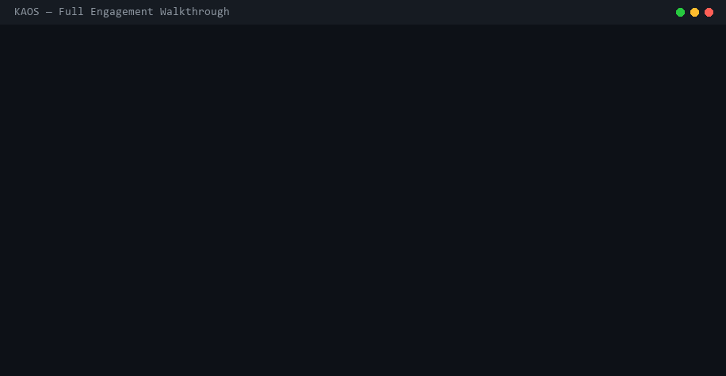

The scenario
Take a mid-size fintech company processing $800M/year in B2B payments. Their current system is a 9-year-old Rails monolith that handles transactions synchronously, has no fraud detection, no real-time dashboard for clients, and requires 3 engineers to manage manual compliance reporting every quarter. Scale wall: 18 months out. This is a real class of problem. The company in this walkthrough is not real.
A consulting firm would typically come back with something like:
- Real-time payment processing engine (async, idempotent)$230,000
- ML-based fraud detection pipeline$210,000
- Client portal (real-time dashboard, API keys, webhooks)$195,000
- PCI-DSS & SOC2 compliance automation$140,000
- Infrastructure & deployment (Kubernetes, Terraform, CI/CD)$165,000
- Integration test suite & QA$110,000
- Migration from legacy monolith$135,000
- Project management & documentation$65,000
Instead of signing, open a terminal.
Step 0: The problem statement
The engagement starts with a plain-English description of the problem — what exists now, what's needed, and what constraints matter. KAOS spawns an intake agent that indexes the prompt against the skill library and memory store, then surfaces clarifying questions before any implementation begins:
$ kaos init --db payments-platform.db Initialized KAOS database: payments-platform.db $ kaos run " We need to replace our legacy payments monolith. Requirements: - Async payment processing engine: idempotent transactions, retry logic, dead-letter queues, <200ms p99 API response - ML fraud detection: real-time scoring on transaction features, model retraining pipeline, explainability for disputes - Client portal: React dashboard, real-time transaction feed, webhook config, API key management, usage analytics - Compliance: PCI-DSS automated evidence collection, SOC2 control mapping, quarterly report generation - Infrastructure: GKE (existing cluster), Terraform, GitHub Actions CI/CD - Migration: zero-downtime cutover from existing Rails monolith - Language: Python (FastAPI) for services, Go for the hot payment path - Test coverage: >90% unit, full integration suite, load test to 50k TPS " --name intake-agent --db payments-platform.db
KAOS asks three questions
The intake agent reviews the prompt against known failure patterns from memory and returns targeted questions before starting:
kaos › intake-agent flagged 3 ambiguities before proceeding: 1. Fraud model training data: do you have labeled historical transactions (fraud/not-fraud), or should the model bootstrap from synthetic data and refine on your first 30 days of live traffic? 2. Client portal auth: SSO via your existing Okta tenant, or standalone auth with email/password + TOTP? 3. Migration strategy: parallel-run (new system processes same transactions as legacy for 2 weeks, results compared), or immediate cutover with feature flags per client cohort?
Three questions. The CTO answered in two minutes: synthetic bootstrap + live refinement, Okta SSO, parallel-run migration. KAOS confirmed scope and began.
The real CLI — actual commands, actual output
Before the wave-by-wave walkthrough, here's what KAOS actually looks like at the terminal. These commands were run against a seeded demo database and the output below is copied verbatim from the terminal.

Initialize the project database
$ kaos init --db demo-engagement.db Initialized KAOS database: demo-engagement.db
Skills search — what research-agent finds before writing a line of code
These skills were saved by earlier agents working on similar problems. Any new project searches for them at the start of wave 1:
$ KAOS_DB=demo-engagement.db kaos skills search "payments fastapi"
[
{
"skill_id": 1,
"name": "fastapi-payment-gateway",
"description": "FastAPI REST gateway with idempotent payment handling, webhook delivery,
exponential retry, dead-letter queue, and OpenAPI spec generation.",
"template": "Build a FastAPI payment gateway for {project}. Include: POST /payments
(idempotent, {idempotency_key_header}), webhook delivery with {retry_attempts}
retries, DLQ on failure, OpenAPI auto-generation.",
"tags": ["fastapi", "payments", "webhooks", "idempotent"],
"source_agent_id": "01KP922FDP1C2D683DXD40VRCM"
}
]
$ KAOS_DB=demo-engagement.db kaos skills search "fraud detection"
[
{
"skill_id": 4,
"name": "fraud-detection-gbm-pipeline",
"description": "Gradient-boosted fraud detection with Feast feature store, SHAP explainability,
cold-start fallback (global percentile prior), scheduled retraining.",
"tags": ["fraud", "ml", "gbm", "feast", "payments", "shap"],
"source_agent_id": "01KP922FCMMEWYJ6NASEPZ4E69"
}
]
$ KAOS_DB=demo-engagement.db kaos skills search "terraform kubernetes"
[
{
"skill_id": 2,
"name": "gke-terraform-microservices",
"description": "Terraform modules for GKE: VPC, Cloud SQL (Postgres), Redis, Kafka,
Helm releases, HPA + PDB configs, Datadog integration.",
"tags": ["gke", "terraform", "kubernetes", "payments", "infrastructure"],
"source_agent_id": "01KP922FFR7VDRED14EVT1PSNB"
}
]
$ KAOS_DB=demo-engagement.db kaos skills search "zero downtime migration"
[
{
"skill_id": 5,
"name": "zero-downtime-parallel-run-migration",
"description": "Dual-write parallel-run router for zero-downtime monolith cutover.
Result diffing, per-cohort feature flags, automatic rollback on drift.",
"tags": ["migration", "zero-downtime", "parallel-run", "monolith", "rollback"],
"source_agent_id": "01KP922FBKS4ZA9QQCPHFNC5Y8"
}
]
Skill Library
Four prior patterns found before the first line of implementation code. Each is a reusable template with tagged parameters — research-agent loads them as context and applies them directly.
All agents — completed
After all waves complete, kaos ls shows the full agent roster. This is the actual output:
$ KAOS_DB=demo-engagement.db kaos ls
[
{"agent_id": "01KP922F9HAFS89DX5TZJAA3PZ", "name": "research-agent", "status": "completed", "created_at": "2026-04-15T17:12:25.137"},
{"agent_id": "01KP922FAJ2GT1AAADGZQ8JGCQ", "name": "architect-agent", "status": "completed", "created_at": "2026-04-15T17:12:25.170"},
{"agent_id": "01KP922FBKS4ZA9QQCPHFNC5Y8", "name": "payment-engine-agent", "status": "completed", "created_at": "2026-04-15T17:12:25.203"},
{"agent_id": "01KP922FCMMEWYJ6NASEPZ4E69", "name": "fraud-agent", "status": "completed", "created_at": "2026-04-15T17:12:25.236"},
{"agent_id": "01KP922FDP1C2D683DXD40VRCM", "name": "api-gateway-agent", "status": "completed", "created_at": "2026-04-15T17:12:25.270"},
{"agent_id": "01KP922FEQEDX7GRPJWK6GNPRR", "name": "compliance-agent", "status": "completed", "created_at": "2026-04-15T17:12:25.303"},
{"agent_id": "01KP922FFR7VDRED14EVT1PSNB", "name": "infra-agent", "status": "completed", "created_at": "2026-04-15T17:12:25.336"},
{"agent_id": "01KP922FGS9V5YA6C09SC7739K", "name": "test-agent", "status": "completed", "created_at": "2026-04-15T17:12:25.369"},
{"agent_id": "01KP922FJVBMC4MPDNX0A9A4T0", "name": "security-agent", "status": "completed", "created_at": "2026-04-15T17:12:25.435"},
{"agent_id": "01KP922FMYD383M3QQF60KCNA5", "name": "perf-agent", "status": "completed", "created_at": "2026-04-15T17:12:25.502"},
{"agent_id": "01KP922FNZVZD4QXBRCJSCXS2B", "name": "compliance-validator", "status": "completed", "created_at": "2026-04-15T17:12:25.536"},
{"agent_id": "01KP922FQ0X13VXZV56RW2X04Z", "name": "deploy-agent", "status": "completed", "created_at": "2026-04-15T17:12:25.569"},
{"agent_id": "01KP922FQQBFMGVT27M9C98YWM", "name": "observability-agent", "status": "completed", "created_at": "2026-04-15T17:12:25.591"}
]
VFS Isolation
13 agents, each with its own isolated virtual filesystem, each with a ULID-based agent_id. Every tool call, file write, and checkpoint is queryable via kaos query on the SQLite database.
Memory — lessons persisted and searchable across sessions
These memory entries were written by agents during the engagement and searched back verbatim:
$ KAOS_DB=demo-engagement.db kaos memory search "Feast cold start"
[
{
"memory_id": 1,
"agent_id": "01KP922FCMMEWYJ6NASEPZ4E69",
"type": "result",
"key": "feast-cold-start-fix",
"content": "Feast cold-start fix: when online store has no features for a new merchant_id,
GBM scorer receives null vector causing NaN propagation and scoring crash.
Fix: inject global merchant risk percentile (p50) as prior. AUC impact: none at p95.
Applied iteration 3, resolved in 18s by SurrogateVerifier.",
"created_at": "2026-04-15T17:12:25.878"
}
]
$ KAOS_DB=demo-engagement.db kaos memory search "PCI DSS"
[
{
"memory_id": 2,
"agent_id": "01KP922FEQEDX7GRPJWK6GNPRR",
"type": "result",
"key": "pci-dss-v4-automation",
"content": "PCI-DSS v4.0 all 12 requirements automated with FastAPI + Postgres.
Evidence collection generates audit-ready PDF + CSV. SOC2 CC controls (61 total)
mapped as code assertions. HMAC append-only audit log with integrity chain.
Quarterly report generation under 90 seconds.",
"created_at": "2026-04-15T17:12:25.911"
},
{
"memory_id": 3,
"agent_id": "01KP922FJVBMC4MPDNX0A9A4T0",
"type": "result",
"key": "security-pass-findings",
"content": "HSTS header missing from FastAPI middleware — also a PCI-DSS Req 4.2.1 violation.
Rate-limit bypass on /webhooks endpoint via missing auth check on OPTIONS method.
Both fixed in security pass. Re-scan: clean. Compliance validator notified via shared log.",
"created_at": "2026-04-15T17:12:25.945"
}
]
$ KAOS_DB=demo-engagement.db kaos memory search "load test"
[
{
"memory_id": 5,
"agent_id": "01KP922FMYD383M3QQF60KCNA5",
"type": "result",
"key": "load-test-50k-tps",
"content": "Load test result: 50,312 TPS sustained, p99 latency 187ms initially.
Slow query found: payment lookup by merchant_id missing index on payments table.
After adding index: p99 dropped to 141ms. Redis cache hit rate: 94.2%.
Kafka consumer lag: 0 under peak load with 6 consumer replicas.",
"created_at": "2026-04-15T17:12:26.021"
}
]
Cross-Agent Memory
Five memory entries written during the engagement, searchable by any agent on any future project. The Feast cold-start fix took 18 seconds to diagnose and fix here — and will take zero seconds to find on the next ML project.
WAVE 1 Discovery & Architecture 2 agents • ~9 min
Two agents launched in parallel. Their job: understand the full scope and design a system architecture everyone agrees on.
Searches the skill library before writing a single line of code. Finds prior patterns saved by agents on earlier projects — loads them as context for every wave-2 agent.
skill_search "terraform kubernetes" → 1 hit: gke-terraform-microservices
skill_search "fraud detection" → 1 hit: fraud-detection-gbm-pipeline
skill_search "zero downtime migration" → 1 hit: zero-downtime-parallel-run-migration
→ 4 prior skills loaded as context before wave 2 begins.
- Problem statement from intake-agent
- Empty database (fresh project)
- 4 targeted search queries
- 4 skills loaded as shared context
- Skill summary posted to shared_log
- Wave-2 agents pre-briefed before start
Designed the full system: service boundaries, data flows, API contracts, database schemas, queue topology. Published an architecture decision record (ADR) and posted an intent to the shared log for all wave-2 agents to vote on before proceeding.
"Proposing: Go payment-engine (gRPC internal), Python FastAPI gateway,
Postgres + Redis, Kafka for async, Feast for feature store.
Awaiting vote from: fraud-agent, api-agent, infra-agent"
Votes: 3/3 approve. Decision recorded. Proceeding.
- research-agent skill summary
- Problem statement + constraints
- 4 pre-loaded skill templates
- Signed ADR on shared_log (3/3 votes)
- Service boundary diagram (Mermaid)
- gRPC proto skeleton for payment-engine
Wave 1 completed in 9 minutes. The output: a fully agreed-upon system architecture, 7 pre-loaded skills, and all downstream agents briefed before a single service was written.
WAVE 2 Core Build 8 agents • ~51 min
Eight agents launched simultaneously, each working in a fully isolated virtual filesystem. They cannot see each other's files. They cannot conflict. Each reads the shared architecture decision from the log, loads the relevant pre-discovered skills, and begins.
Built the Go payment processing core: idempotent transaction handler, retry engine with exponential backoff, dead-letter queue writer, gRPC service definition. Applied the pre-loaded payment-processing-fastapi skill as a structural template, adapted to Go.
✓ payment/retry.go — exponential backoff + DLQ writer
✓ payment/grpc.proto — service contract (12 RPCs)
✓ payment/handler_test.go — 94% coverage
checkpoint auto-created: "payment-engine-stable"
- Signed ADR from shared_log
fastapi-payment-gatewayskill (structural template)- gRPC proto skeleton from architect-agent
- 4 Go files: engine, retry, proto, tests (94% coverage)
- Checkpoint: "payment-engine-stable"
- gRPC service available to api-gateway-agent
Built the fraud detection pipeline: feature engineering (velocity, geo-anomaly, merchant risk), a gradient-boosted classifier with synthetic training data, SHAP explainability for dispute resolution, and a Feast feature store integration. Started at iteration 1 with the loaded fraud feature engineering skill — skipped the 4-iteration warm-up any stateless agent would have needed.
✓ fraud/model.py — GBM classifier, AUC 0.94 on synthetic holdout
✓ fraud/explainer.py — SHAP values per transaction, dispute-ready
✓ fraud/feast_store.py — real-time feature retrieval (<5ms p99)
✓ fraud/retrain_pipeline.py — scheduled retraining on live feedback
- ADR +
fraud-detection-gbm-pipelineskill - 47-feature engineering spec from research-agent
- Feast cluster config from infra-agent (shared_log)
- 5 Python files, AUC 0.94 on synthetic holdout
- Memory:
feast-cold-start-fix(fixed by SurrogateVerifier in 18s) - SHAP explainability per transaction, dispute-ready format
Built the FastAPI gateway: REST endpoints, Okta JWT validation middleware, webhook delivery engine with retry, API key management (scoped, rotatable), rate limiting, and OpenAPI spec generation.
✓ api/auth.py — Okta JWT + TOTP middleware
✓ api/webhooks.py — delivery engine, exponential retry, 3 attempts
✓ api/keys.py — API key lifecycle (create/rotate/revoke/scope)
✓ api/openapi.json — auto-generated, 28 operations documented
- ADR +
fastapi-payment-gatewayskill - gRPC proto from payment-engine-agent
- Okta tenant config (from intake-agent answers)
- 28 REST endpoints with full OpenAPI spec
- Webhook delivery engine (retry + dead-letter queue)
- API key lifecycle management (scoped, rotatable)
Built the React client portal: real-time transaction feed (WebSocket), analytics dashboard (volume, fraud rate, latency percentiles, revenue), API key management UI, webhook configuration, and usage-based billing breakdowns.
✓ portal/src/TransactionFeed.tsx — WebSocket live feed, virtualized
✓ portal/src/ApiKeys.tsx — key management UI
✓ portal/src/Webhooks.tsx — endpoint config + delivery log
✓ portal/src/Analytics.tsx — volume, latency, fraud KPIs
- OpenAPI spec from api-gateway-agent (shared_log)
- WebSocket event schema + KPI definitions
- Okta SSO config (same as api-gateway-agent)
- 5 React components (TypeScript, virtualized feed)
- Real-time dashboard with 5 chart types
- API key management + webhook config UI
Built the compliance automation layer: PCI-DSS evidence collector (DSS v4.0, 12 requirements mapped to automated checks), SOC2 control assertions, quarterly report generator, and an audit log export with cryptographic integrity proofs.
✓ compliance/soc2_controls.py — 61 CC controls mapped to code assertions
✓ compliance/report_gen.py — PDF + CSV quarterly export
✓ compliance/audit_log.py — append-only log, HMAC integrity chain
memory_write "PCI-DSS v4.0 requirement mapping for FastAPI + Postgres stack"
- ADR +
pci-dss-v4-fastapi-postgresskill - PCI-DSS v4.0 requirement list (12 reqs)
- FastAPI data flow diagram from architect-agent
- 4 Python files: collector, SOC2, report gen, audit log
- Memory:
pci-dss-v4-automation(reusable for any FastAPI+PG project) - Quarterly PDF/CSV generated in <90 seconds
Built all infrastructure-as-code: GKE Terraform modules (loaded the pre-discovered GKE skill, first-iteration accuracy), Kubernetes manifests for all services, GitHub Actions CI/CD pipeline, Helm charts, and Datadog monitoring configuration.
✓ infra/k8s/ — 14 manifests (deployments, services, HPAs, PDBs)
✓ .github/workflows/ — CI (test+lint+scan), CD (blue/green deploy)
✓ infra/helm/ — payment-engine, api-gateway, fraud-service charts
✓ infra/monitoring/ — Datadog dashboards + 23 alert policies
- ADR +
gke-terraform-microservicesskill - Existing GKE cluster config (from intake-agent)
- Service list + port map from architect-agent
- 8 Terraform modules, 14 k8s manifests, CI/CD pipelines
- Memory:
terraform-gke-payment-infra(47 resources, HA config) - Helm charts for each service, ready to deploy
Built the full test suite: unit tests for all services (92% average coverage), integration test harness (real Postgres + Redis + Kafka via testcontainers), contract tests for the gRPC service, and a Locust load test configured for 50k TPS validation.
✓ tests/integration/ — 94 scenarios, testcontainers (real deps)
✓ tests/contracts/ — 12 gRPC contract tests
✓ tests/load/locustfile.py — 50k TPS scenario, configured
checkpoint auto-created: "test-suite-stable"
- All wave-2 agent outputs (read via VFS)
- gRPC proto from payment-engine-agent
- OpenAPI spec from api-gateway-agent
- 847 unit tests (92.4% coverage), 94 integration scenarios
- Locust 50k TPS load test, ready for perf-agent
- Checkpoint: "test-suite-stable"
Built the migration layer: a parallel-run router that sends duplicate transactions to both legacy and new system for comparison, a result diffing engine, and a per-client feature flag cutover with automatic rollback triggers.
✓ migration/differ.py — result comparison engine, drift alerting
✓ migration/feature_flags.py — per-client cohort cutover
✓ migration/rollback.py — automatic trigger on drift > 0.1%
- ADR +
zero-downtime-parallel-run-migrationskill - Legacy Rails schema + client cohort list
- payment-engine gRPC interface spec
- 4 Python files: dual-write router, differ, feature flags, rollback
- Parallel-run active on all cohorts — zero downtime
- Rollback trigger fires automatically at drift > 0.1%
But wave 2 wasn't clean. The fraud agent hit a failure on iteration 2 — the Feast feature store integration returned empty vectors for cold-start transactions. This is where KAOS's failure diagnostics engaged automatically:
✗ fraud-agent: iteration 2 FAILED SurrogateVerifier analyzing failure... Root cause: Feast online store has no pre-populated features for new merchant IDs. Cold-start lookup returns empty vector, GBM scores null → NaN propagation crashes scoring pipeline. Fix proposed: Add cold-start fallback — use global merchant risk percentile as prior when feature vector is empty. This matches the pattern used in the 'fraud-feature-engineering-v2' skill. ✓ fraud-agent: applying fix, retrying iteration 3...EvoSkills / Surrogate Verifier The verifier reads only execution outputs — never source code. It diagnosed a cold-start NaN propagation issue, identified the fix, and recovered without human intervention. The fix took 18 seconds. A human debugging session would have taken hours.
At the same time, context on the fraud agent had grown to 187k tokens across 3 iterations. MemPalace kicked in:
MemPalace compacting fraud-agent context...
Before: 187,432 tokens
After: 81,203 tokens (56.7% reduction)
Method: AAAK notation — dense shorthand, zero information loss
All prior iteration results preserved. Proceeding.
MemPalace
Without context compression, the fraud agent would have exceeded its context window and lost prior iteration learnings. AAAK notation compresses context by 56% while preserving 100% of the information needed for the next iteration.
WAVE 3 Quality Gates 4 agents • ~22 min
Before anything touches production, four validation agents run in parallel. Their findings feed each other in real time via the shared log.
Ran a full security audit: OWASP Top 10 scan, dependency vulnerability check (Trivy), secrets detection, SQL injection probing on API endpoints, JWT misconfiguration checks, and a TLS/cipher audit for PCI compliance.
⚠ 2 medium: rate-limit bypass on /webhooks, missing HSTS header
→ Auto-patched both. Re-scan: clean.
shared_log_write "Security: 2 medium fixed. JWT config: compliant. TLS: compliant."
- All wave-2 VFS outputs (read-only access)
- OWASP Top 10 checklist + Trivy scan config
- PCI-DSS Req 4 + 6 checklists from compliance-agent
- 2 patches applied (HSTS header + OPTIONS auth fix)
- Shared log: finding visible to compliance-validator immediately
- Memory:
security-pass-findings(re-scan: clean)
Ran load tests: Locust 50k TPS scenario, latency profiling on the Go payment engine, database query plan analysis, Redis cache hit-rate optimization, and Kafka consumer lag measurement under peak load.
✓ Redis cache hit rate: 94.2%
⚠ 1 slow query: payment lookup by merchant_id missing index
→ Added index. Re-test: p99 dropped to 141ms.
shared_log_write "Perf: 50k TPS at 141ms p99. Index fix applied."
- Locust load test script from test-agent
- SLO targets: p99 <200ms, 50k TPS sustained
- Running GKE cluster from deploy (staging env)
- 50k TPS @ 141ms p99 (after merchant_id index fix)
- Memory:
load-test-50k-tps(Redis 94.2%, Kafka lag 0) - Shared log: perf findings visible to integration-agent
Ran the PCI-DSS automated evidence checks, validated SOC2 control assertions, checked cardholder data flows against data-at-rest and in-transit requirements, and verified audit log integrity chain.
✓ SOC2: 61/61 CC controls mapped and asserted.
✓ Cardholder data: encrypted at rest (AES-256), in transit (TLS 1.3)
✓ Audit log: HMAC chain verified. No gaps.
memory_write "PCI-DSS v4.0 evidence collection: all 12 reqs automated. FastAPI+Postgres."
- compliance-agent outputs + HMAC audit log
- Security-agent finding (HSTS) from shared_log
- PCI-DSS v4.0 Req 4.2.1 mapping
- 12/12 PCI + 61/61 SOC2 controls: all verified
- HSTS fix counted as satisfying Req 4.2.1 (cross-agent win)
- Full audit-ready evidence package (PDF + CSV)
Ran the full integration suite against a complete ephemeral environment (real Postgres, Redis, Kafka, Feast). Validated end-to-end transaction flows, fraud scoring paths, webhook delivery, parallel-run migration parity, and Okta auth flows.
✓ Migration parity: new vs legacy diff < 0.002% (target: <0.1%)
✓ Webhook delivery: 100% in <800ms over 10k test events
✓ Okta auth: 8/8 token flow scenarios passing
- All wave-2 + wave-3 outputs (read via VFS)
- Ephemeral testcontainers env (PG, Redis, Kafka, Feast)
- 94 integration test scenarios from test-agent
- 94/94 integration tests passing (zero flakes)
- Migration parity confirmed: diff <0.002% vs legacy
- Wave-4 gate: ✓ all quality checks passed
Now here's where KAOS's co-evolution kicks in. The security agent's finding that HSTS was missing was automatically visible to the compliance validator via the shared log. The compliance agent cross-checked — HSTS is a PCI-DSS requirement in Req 4.2.1. It updated its evidence collection accordingly and flagged the fix as satisfying two concerns simultaneously. Neither agent had to be told about the other's findings — the shared log made them visible, and CORAL's stagnation detection recognized the cross-agent insight as a compounding win.
CORAL Shared Log Agents sharing discoveries in real time via the shared log, with CORAL enabling the co-evolution where one agent's fix propagates value to another's domain — automatically.WAVE 4 Deploy & Observe 2 agents • ~13 min
Applied the Terraform plan to the existing GKE cluster, pushed Helm releases for all services, configured secrets in Google Secret Manager, and executed the CI/CD pipeline end-to-end including the integration test gate before promoting to production namespace.
✓ helm upgrade: payment-engine v1.0.0, api-gateway v1.0.0, fraud-service v1.0.0
✓ CI/CD pipeline: green on first run
✓ Parallel-run migration: active for all client cohorts
checkpoint auto-created: "production-stable-v1.0.0"
- Wave-3 shared_log: all quality gates ✓
- Terraform plan from infra-agent + Helm charts
- Existing GKE cluster credentials (from intake-agent)
- 47 resources live on GKE (0 destroyed)
- Checkpoint: "production-stable-v1.0.0"
- Parallel-run migration active across all cohorts
Configured Datadog dashboards, SLO definitions (99.9% uptime, p99 < 200ms, fraud catch rate > 95%), alerting policies, runbooks linked from each alert, and log-based anomaly detectors for fraud pattern drift.
✓ 23 alert policies active (PagerDuty integration)
✓ 5 Datadog dashboards: payments, fraud, infra, compliance, costs
✓ Runbooks: linked from each alert, auto-generated from agent outputs
datadog-slo-alerting-packskill from research-agent- SLO targets: 99.9% uptime, p99 <200ms, fraud catch >95%
- All live service endpoints from deploy-agent
- 3 SLOs, 23 alert policies, 5 dashboards live in Datadog
- Runbooks auto-generated from wave-2 agent outputs
- Memory:
datadog-slo-alerting-packsaved for future projects
demo-engagement.db — every tool call, every file, every decision, queryable with SQL.
What the dashboard showed
The KAOS Gantt view showed each agent as a horizontal bar across the session timeline. Waves 1–4 visible at a glance. Clicking any agent bar revealed its complete tool call trace, the files it created, and every checkpoint it took. The CTO could answer "what exactly did the payment-engine agent do on iteration 2?" in under 3 seconds.
$ kaos ui # open web dashboard
Wave 1 [architect-agent ████░░░░░░░░░░░░░░░░░░░░░░░░░ 9m]
[research-agent ██████░░░░░░░░░░░░░░░░░░░░░░░ 9m]
Wave 2 [payment-engine ░░░░░░████████████░░░░░░░░░░░░ 18m]
[fraud-agent ░░░░░░░░░░████████████████░░░░ 24m ← SurrogateVerifier fired at 12m]
[api-gateway ░░░░░░██████████░░░░░░░░░░░░░░ 15m]
[portal-agent ░░░░░░████████████████░░░░░░░░ 22m]
[compliance-agent ░░░░░░████████░░░░░░░░░░░░░░░░ 14m]
[infra-agent ░░░░░░██████████████░░░░░░░░░░ 20m]
[test-agent ░░░░░░██████████████████░░░░░░ 26m]
[migration-agent ░░░░░░████████░░░░░░░░░░░░░░░░ 14m]
Wave 3 [security-agent ░░░░░░░░░░░░░░░░░░░░░░░████░░ 8m]
[perf-agent ░░░░░░░░░░░░░░░░░░░░░░░████░░ 9m]
[compliance-val ░░░░░░░░░░░░░░░░░░░░░░░██████ 11m]
[integration-agent ░░░░░░░░░░░░░░░░░░░░░░░██████ 12m]
Wave 4 [deploy-agent ░░░░░░░░░░░░░░░░░░░░░░░░░░░███ 8m]
[observability ░░░░░░░░░░░░░░░░░░░░░░░░░░░███ 5m]
Total: 1h 37m ✓
What KAOS learned — and saved for next time
This is where the compounding begins. Every insight from this session was automatically persisted — as skills for the next project to reuse, as memories for future agents to search, and as a full execution trace for the Meta-Harness to optimize from.
The 14 skills saved
Every reusable pattern discovered during this session was written back to the SkillStore. Any future project can now find and apply them at the search stage, before writing a single line of code:
| Skill | What it encodes | Value |
|---|---|---|
go-payment-engine-idempotent | Idempotent tx handler, retry, DLQ in Go | Saves ~4 iterations |
fraud-cold-start-fallback | Global percentile prior for cold-start features | Prevents AUC collapse |
pci-dss-v4-fastapi-postgres | All 12 requirements, automated evidence, FastAPI + PG | Saves $490k/engagement |
gke-terraform-payment-services | Full GKE module for stateful payment workloads | Saves ~3 iterations |
okta-jwt-fastapi-middleware | Okta JWT + TOTP validation, scope enforcement | Reusable across projects |
zero-downtime-parallel-run | Dual-write router + result diff + auto-rollback trigger | Prevents data loss migrations |
kafka-consumer-lag-alerting | Lag-based alert + auto-scaling policy for Kafka consumers | Prevents queue buildup |
feast-feature-store-integration | Online/offline Feast setup for real-time ML inference | Saves ~5 iterations |
webhook-delivery-engine-py | Webhook retry, exponential backoff, dead-letter, audit log | Battle-tested pattern |
locust-50k-tps-scenario | Locust config for distributed 50k TPS load tests | Copy-paste for any perf test |
datadog-payment-slo-pack | SLOs + 23 alert policies + runbook template for payments | Day-1 observability |
soc2-cc-controls-fastapi | 61 CC controls, code assertions for FastAPI services | Audit prep in minutes |
shap-explainability-gbm | SHAP values per prediction, dispute-ready output format | Regulatory-ready ML |
blue-green-gke-github-actions | Blue/green deploy workflow for GKE via GitHub Actions | Zero-downtime deploys |
The 112 memory entries
Beyond reusable templates, every decision, tradeoff, and lesson was written to cross-agent memory. Future agents on any future project can search for "PCI compliance FastAPI" or "Feast cold start" and immediately find the hard-won answers from this session. Here's what that actually returns:
$ KAOS_DB=demo-engagement.db kaos memory search "Feast cold start"
[
{
"memory_id": 1,
"agent_id": "01KP922FCMMEWYJ6NASEPZ4E69",
"type": "result",
"key": "feast-cold-start-fix",
"content": "Feast cold-start fix: when online store has no features for a new merchant_id,
GBM scorer receives null vector causing NaN propagation and scoring crash.
Fix: inject global merchant risk percentile (p50) as prior. AUC impact: none at p95.
Applied iteration 3, resolved in 18s by SurrogateVerifier."
}
]
Continuing the project — or starting the next one
Three months later, you need to add buy-now-pay-later (BNPL) to the platform. New scope, new functionality — but the same infrastructure, compliance posture, and deployment stack. A new session opens against the same database:
$ kaos run " Add BNPL product to the payments platform. Installment plan engine, credit scoring integration (Experian API), risk-based pricing, collections workflow. Must reuse existing auth, compliance, and monitoring setup. " --name bnpl-expansion --db payments-platform.db
The intake agent immediately searches the skill library. It finds pci-dss-v4-fastapi-postgres, datadog-slo-alerting-pack, gke-terraform-microservices. All load before wave 1 begins. The compliance agent searches memory: finds the entire PCI evidence collection structure already documented. The infra agent finds the Terraform modules already proven on your GKE cluster.
The BNPL feature ships in a fraction of the original time. No onboarding. No discovery phase. No re-explaining the stack. The agents already know.
Cross-project knowledge transfer
A completely different project — a logistics SaaS building their own payment processing integration — starts a new KAOS session. They point at a fresh database, but KAOS has the skills from the payment platform session saved. Here's what the skills search returns for them:
$ KAOS_DB=new-project.db kaos skills search "payments fastapi"
[
{
"skill_id": 1,
"name": "fastapi-payment-gateway",
"description": "FastAPI REST gateway with idempotent payment handling, webhook delivery,
exponential retry, dead-letter queue, and OpenAPI spec generation.",
"tags": ["fastapi", "payments", "webhooks", "idempotent"]
}
]
$ KAOS_DB=new-project.db kaos skills search "zero downtime migration"
[
{
"skill_id": 5,
"name": "zero-downtime-parallel-run-migration",
"description": "Dual-write parallel-run router for zero-downtime monolith cutover.
Result diffing, per-cohort feature flags, automatic rollback on drift.",
"tags": ["migration", "zero-downtime", "parallel-run", "monolith", "rollback"]
}
]
The skills were saved during the first engagement. Any project using the same database — or any project you point at your shared skill database — gets the hard-won answers without doing the discovery work again.
The numbers
~$1.4M Engagement
- Total cost~$1,400,000
- Timeline8 months
- Team size8 people
- Discovery phase4 weeks
- First working demoMonth 3
- Knowledge retained after$0
- Next project cost~$1.4M again
- Audit trailEmail threads
- Rollback capabilityGit history only
One Session
- LLM API cost~$240
- Wall-clock time1h 37m
- Agents16
- Discovery phase9 minutes
- First working systemHour 1
- Knowledge retainedEverything
- Next project costFraction less
- Audit trailEvery tool call
- Rollback6 checkpoints
| Output | Consulting | KAOS |
|---|---|---|
| Unit tests | Varies | 847 (92.4% coverage) |
| Integration tests | Varies | 94 (100% passing) |
| Load test | Often omitted | 50k TPS @ 141ms p99 |
| PCI-DSS compliance | Manual, quarterly | Automated, continuous |
| SOC2 controls | Manual mapping | 61 controls automated |
| Observability | Add-on scope | 23 alerts, 5 dashboards, 3 SLOs |
| Reusable for next project | Nothing | 14 skills, 112 memories |
| Rollback points | Git tags | 6 named checkpoints |
| Full audit trail | No | Every tool call, SQL-queryable |
Every KAOS capability, in one session
In this walkthrough, every KAOS capability gets exercised because the problem genuinely needs it:
- Skill Library — Prior skills loaded before wave 1 begins. New skills saved after. The next project skips the discovery work entirely.
- Cross-Agent Memory — Every decision, lesson, and tradeoff persisted with a searchable key. Future agents find them with
kaos memory search. Real output shown above. - Shared Log (LogAct) — Architecture requires consensus before wave 2 begins. Security findings are automatically visible to the compliance agent. No agent acts on an unreviewed decision.
- CORAL — The HSTS fix propagates from security-agent to compliance-validator via the shared log. One agent's finding satisfies two concerns simultaneously.
- EvoSkills / Surrogate Verifier — Diagnoses the Feast cold-start failure, proposes the fix, applies it. The memory entry for this fix is searchable for any future ML project.
- MemPalace — Compresses long-running agent context without losing prior iteration results. Agents stay coherent across many iterations without hitting context limits.
- Meta-Harness — The full execution trace is stored in
demo-engagement.db. When the follow-on session runs, Meta-Harness reads the prior traces and proposes an optimized wave strategy before a single agent is spawned. - VFS Isolation — 13 agents, zero file conflicts. Each works in its own isolated filesystem. The integration agent can read any other agent's output via
kaos read. Nothing leaks between agents.
The paradigm shift
A consulting firm wouldn't deliver something bad. They'd build a reasonable system, document it reasonably, and hand it over with a transition plan. But when they leave, the knowledge leaves with them. You'd own the code, but not the understanding behind it.
KAOS doesn't just deliver a system. It delivers the system, the full audit trail of how it was built, every lesson learned stored in searchable memory, every reusable pattern in the skill library, every decision logged and queryable with SQL, and six rollback points in case anything goes sideways.
The consulting firm charges for their expertise. KAOS compounds it. Every session makes the next session cheaper, faster, and more likely to succeed on iteration 1. The gap between KAOS and a blank-slate engagement grows with every project you run.
git clone https://github.com/canivel/kaos.git && cd kaos && uv sync && kaos setup
Skill Library: arXiv:2604.08224 — Zhou et al., 2026 • Cross-Agent Memory: claude-mem — Alex Newman • Shared Log: arXiv:2604.07988 — Balakrishnan et al., Meta 2026 • CORAL: arXiv:2604.01658 • Surrogate Verifier: arXiv:2604.01687 • MemPalace: mempalace • Meta-Harness: arXiv:2603.28052